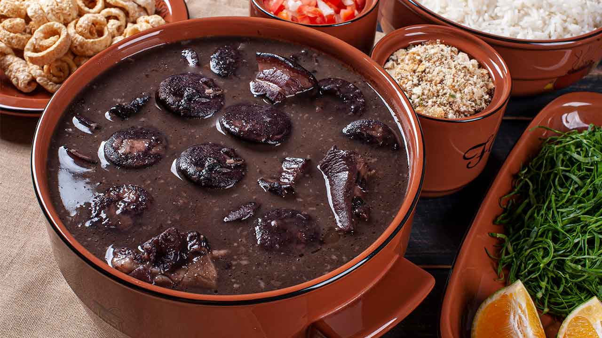

Feijoada

Considered the national dish of Brazil, feijoada is a stew of beans with beef and pork.
In Brazil, it is usually made with black beans and served with farofa, white rice and fried kale. Best prepared over low heat in a thick clay pot.
Ingredients
- 1 pound of dry black beans
- 2 quarts of water, plus more as needed
- 3 ounces of dried beef, chopped
- 1 bay leaf
- 2 smoked pork chops, cut into large chunks, bones reserved
- 4 ounces of bacon, coarsely chopped
- 12 ounces of linguiça sausage, cut into large chunks
- 2 (4 ounce) links Italian sausage
- 1 brown onion, chopped
- 6 cloves of garlic, minced
- 1 teaspoon of ground cumin
- ½ teaspoon of ground coriander
- 1 pinch of cayenne pepper, or to taste
- salt and ground black pepper to taste
- 1 tablespoon of chopped Italian parsley
Steps
- Place the black beans into a large bowl, cover with water, ad let it soak overnight. Drain beans.
- Place the drained beans in a heavy pot with 2 quarts of water. Bring to a simmer over medium heat. Reduce heat to low and simmer until beans are cooked but very firm. This may take 1 and a half to 2 hours.
- Stir chopped dried beef into pot with the beans. Add bay leaf and pork chop bones, stir and simmer on low heat for another 2 hours.
- Cook the bacon in a large dry skiller over medium heat until not quite crisp. Add linguiça and Italian sausage links; cook, stirring often, until the meats are brown, for about 10 minutes. Remove browned meat, reserving accumulated fat in skillet. Slice the Italian sausage into chunks.
- Put the brown onion and garlic in reserved drippings in the skillet over medium heat until the onion is translucent and soft, stirring to deglaze the pan, for about 5 minutes. Season with cumin, coriander, cayenne pepper, salt and black pepper; add 1 tablespoon of chopped Italian parsley. Cook and stir until parsley wilts, for about 2 minutes.
- Stir onion-spice mixture into the pot with beans. Add the cooked bacon, linguiça sausage, Italian sausage and pork chop chunks. Pour in enought water so the meats are just covered with liquid. Increase heat to medium-high and bring it to a simmer. Reduce heat to medium-low and cook uncovered until the beans are very soft and the liquid begins to thicken, for about 1 hour, stirring occasionally. If the beans begin to look dry, add more water.
- When the beans are cooked, ladle the stew into bowls and serve.